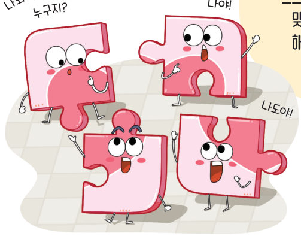
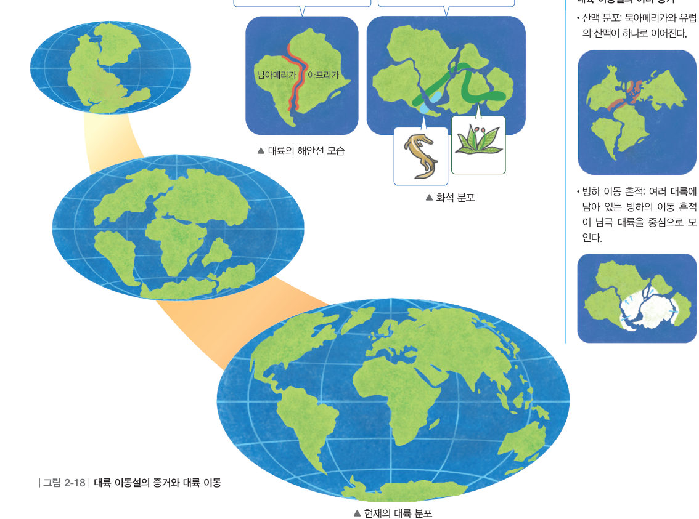

움직이는
대륙
“나와 맞는 조각은 누구지?” “나야!” “나도야!” 흐트러진 퍼즐 조각을 맞추려면 어떻게 해야 할까? 대륙 조각을 맞추고 화석·산맥·빙하 흔적을 겹쳐 본 뒤, 시간을 2억 년 전으로 되돌려 판게아를 만나 보자.
“강원 고생대 국가지질공원에서 발견한 화석이야. 이 화석 중에는 과거에 적도 지역에서 살았던 생물의 화석도 있대.” “적도 지역에서 살았던 생물의 화석이 어떻게 우리나라에서 발견되는지 너무 궁금해.” 이 단원의 힌트 조각을 모으면 판의 이동을 알아내어 세 번째 블록 질문에 답할 수 있다.
이 단원과 관련해 이미 알고 있는 것에 표시해 보자.
서로 다른 퍼즐 조각을 비교하여 퍼즐을 맞추면 원래 모습을 알 수 있다. 20 세기 초 ●베게너는 떨어져 있는 대륙의 해안선 모습과 화석의 분포 등을 바탕으로 과거의 대륙 분포가 어떠했을지 생각했다.
그림 2-18과 같이 베게너는 대륙의 해안선 모습과 화석의 분포 등을 증거로 과거 모든 대륙이 하나로 모여 있었다고 주장했다. 베게너는 이 거대한 대륙을 판게아라고 불렀고, 판게아가 오랜 시간에 걸쳐 갈라지고 이동하여 현재와 같은 대륙 분포를 이루게 되었다는 대륙 이동설을 발표했다. 베게너는 대륙이 이동하는 까닭은 설명하지 못했다. 이후 여러 과학자의 연구 결과로 현재와 같은 대륙 분포가 이루어졌다는 것이 밝혀졌다.

더 알아보기 · 대륙 이동설의 여러 증거
• 산맥 분포: 북아메리카와 유럽의 산맥이 하나로 이어진다.
• 빙하 이동 흔적: 여러 대륙에 남아 있는 빙하의 이동 흔적이 남극 대륙을 중심으로 모인다.
💡 오개념 바로잡기 · 대륙의 해안선은 모두 잘 들어맞을까?
과거에 하나로 모여 있던 여러 대륙이 분리되고 이동하면서 받은 침식 작용과 퇴적 작용 등으로 해안선의 모습이 변했기 때문에 현재 대륙의 해안선이 잘 들어맞지는 않는다.
| ② 대륙의 이동을 처음 발표한 학자는 베게너이다. | |
| ③ 과거 모든 대륙이 하나로 모여 만들어진 거대한 대륙을 유라시아라고 한다. |
- (가)
- (나)
- (다)
| ⑤ 북아메리카의 산맥과 유럽의 산맥을 연결해 보면 하나의 산맥으로 이어진다. | |
| ⑥ 특정 화석의 분포 지역이 여러 대륙에서 발견되는 것은 대륙 이동의 증거가 아니다. | |
| ⑦ 여러 대륙에 남아 있는 빙하의 이동 흔적이 북극 대륙을 중심으로 모인다. | |
| ⑧ 남아메리카 대륙의 동쪽 해안선과 아프리카 대륙의 서쪽 해안선이 잘 들어맞는다. |
1대륙 이동설
⑵ 증거: 대륙의 모습, 화석 분포, 산맥 분포, 빙하 이동 흔적
| 평가 기준 | 스스로 평가 |
|---|---|
| 지식·이해 대륙 이동설을 설명할 수 있는가? | |
| 가치·태도 대륙 조각을 맞추며 과거 대륙의 분포를 설명하고 흥미를 느꼈는가? |